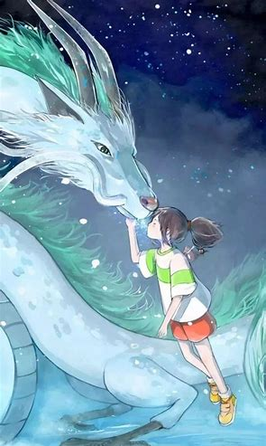

《千与千寻》不仅以绚丽的画面和扣人心弦的剧情赢得了观众的青睐，其音乐更是为这部动画增色不少，为观众带来了深刻而丰富的音乐体验。久石让作为这部动画的作曲家，将音乐与剧情、主角的成长紧密结合，随着故事的推进层层展开，为观众带来了无与伦比的感染力。在影片的开头，诸如《あの夏へ》《あの日の川》和《帰る日》等主题音乐便多次呈现，它们以多样的形式进行情感渲染，令人陶醉其中。久石让的音乐充分展现了日本的文化特色，他巧妙地将丰富的日本文化元素和民族乐器融入作品中，甚至借鉴了日本古代曲目的元素，为观众呈现出一幅绚丽多彩的日本民族风情画卷。在运用日本民族音乐时，久石让通过音乐的变化巧妙地展现了故事的不同发展阶段，使音乐成为电影中表达情感的重要媒介，进一步增强了影片的艺术感染力和观众的情感共鸣
在《千与千寻》这部影片中，每个角色都拥有鲜明的个性色彩，为电影增添了无尽的魅力。观众通过深入了解这些角色，可以更加沉浸在电影的吸引力之中。宫崎骏巧妙地将千寻的父母刻画为贪婪的象征，用“猪”的形象来深刻揭示人类身上某种贪婪的特质，这一设定充满了深刻的寓意。同时，河神被赋予了受到污染的自然的意义，宫崎骏通过这一角色向观众传递出珍惜和爱护自然的呼声。汤婆婆则成为滥权者的代表，宫崎骏运用动画的手法，对这种无视他人利益和尊严的残忍行为进行了犀利的批判。这些角色的精彩刻画不仅丰富了电影的内涵，更引导观众对人性和自然进行深入思考
宫崎骏，这位备受推崇的人文主义大师，其杰作如《风之谷》《幽灵公主》和《平成狸合战》等，都深深地传递了环保的核心理念。而《千与千寻》这部动画影片同样如此，不仅是一部视觉与情感的盛宴，更是一部关于人与自然和谐共生的深刻寓言。在片中，白龙与千寻的相互救助，成为了一幅生动的画面，寓意着大自然与人类应当相互依存、和谐共生，共同守护我们共同的家园。宫崎骏通过这一情节，再次强调了人类应当尊重自然、爱护环境的重要性.jpg)
整个电影以暖色调为主，特别是黄色、橙色和红色，这些色彩传达出温暖、舒适和生机的氛围，与电影的主题和情感紧密相连，强调了人与自然、人与人之间的和谐与温暖 [73]。 电影通过色彩还巧妙地展现了人物性格。例如，千寻的深蓝色衣服象征着她稳重、沉着和冷静的性格；而荻野博士的紫色衣服则体现了他神秘、高贵和理智的特质。此外，电影还利用色彩对比来区分不同的世界。当千寻进入神灵世界时，画面呈现出清新、明亮和透明的色调，象征着神灵世界的美好和纯净；而进入荻野博士的世界时，画面则变得暗淡和灰暗，反映了这个世界的危险和阴险
动画的配乐工作由宫崎骏钦点的作曲家久石让负责，录制地点选在了东京墨田区的“すみだトリフォニーホール”。在创作过程中，久石让提出了一个独特的想法，他认为影片的开头不必像常规电影那样使用盛大的配乐来开场，而可以通过单一的钢琴演奏来细腻地描绘出千寻的心情。而在为汤婆婆这一角色创作配乐时，宫崎骏更是亲自乘坐了“第六号车站”（6番目の駅）以获取灵感，足见他对这部作品配乐的重视与用心
《千与千寻》这部影片采用了先进的电脑数位技术来打造其画面效果。吉卜力工作室首先通过手工方式描绘出各个场景的画面，随后将这些完成的图稿扫描进电脑，利用技术手段制作成生动的动画效果。在色彩方面，工作室运用了由IMAGICA开发的“Color Management System”，极大地增加了画面制作中的可用色数，使画面更加丰富多彩。然而，由于制作进度一度面临赶不上首映时间的压力，吉卜力工作室不得不首次向日本海外的动画室请求援助。.jpg) 韩国的“D.R. Digital”动画室在接到请求后，迅速响应，派遣了四名参与过《大都会》和《人狼 JIN-ROH》等作品制作的员工前来支援，为影片的顺利制作提供了有力保障
韩国的“D.R. Digital”动画室在接到请求后，迅速响应，派遣了四名参与过《大都会》和《人狼 JIN-ROH》等作品制作的员工前来支援，为影片的顺利制作提供了有力保障
当时，为影片中的主要角色千寻和白龙配音的演员分别是初涉演艺圈的柊瑠美和经常为儿童角色配音的声优入野自由，两位都是中学生。入野自由经过试镜选拔，成功获得了为“白龙”配音的机会。当他第一次与宫崎导演见面时，宫崎导演给予他的建议是“多读书”。这是因为影片中的台词充满了古典韵味，如果缺乏足够的知识储备，那么他的声音将无法展现出足够的深度
江户东京建物公园里置放的一列电车厢；锅炉爷爷工作室环境的参考场所“武居三省堂”；目黑雅叙园为动画中油屋室内装潢的灵感来源。 江户日本桥往山梨县的街道，沿路中靠山上一带的住宿区做为开头千寻往新家路上场景参考来源。（初期曾有千寻搬入新家场景的描写、但遭撤销。） 道后温泉本馆选为油屋造型的模特。 日光东照宫作为汤婆婆住所外观。 二条城作为油屋天花板造型来源。 伊万里市的瓷器作为汤婆婆房间豪华的瓷器摆设。 新桥车站西侧乌森口一带的饮食闹区为动画中城镇上饮食店灵感来源